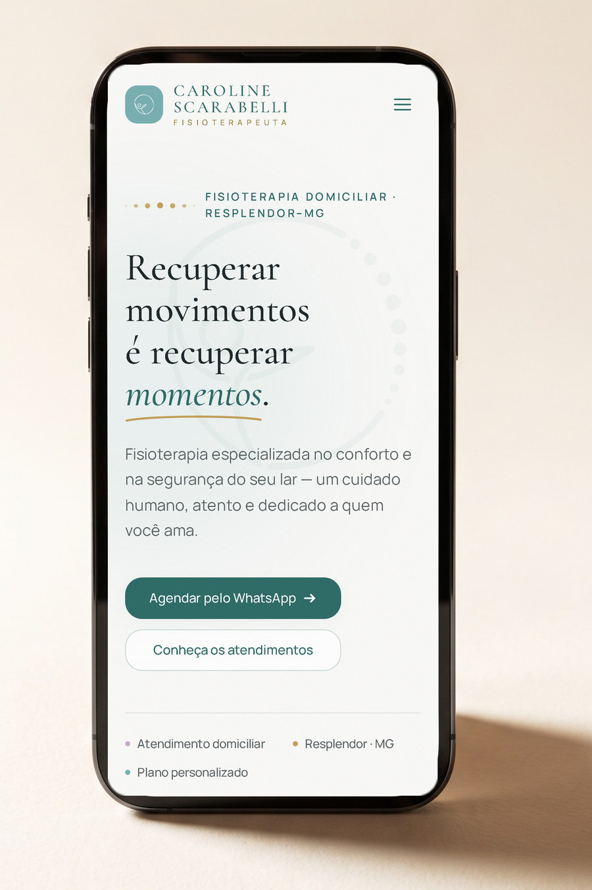
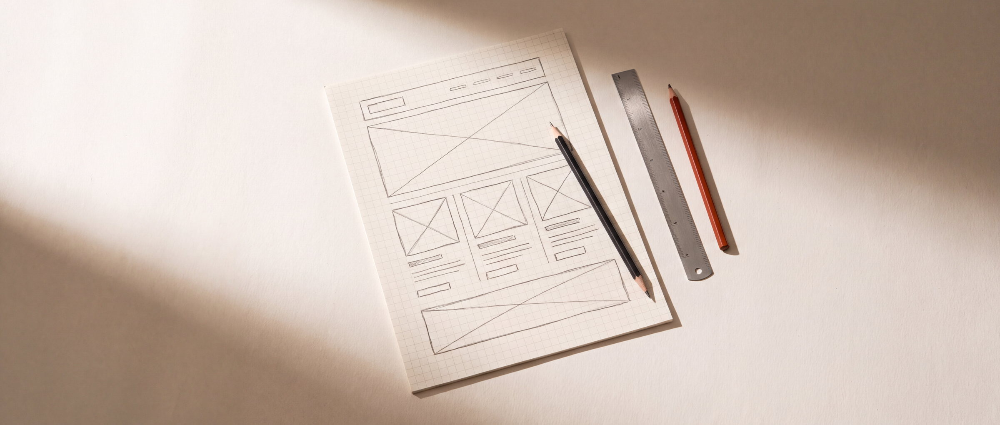
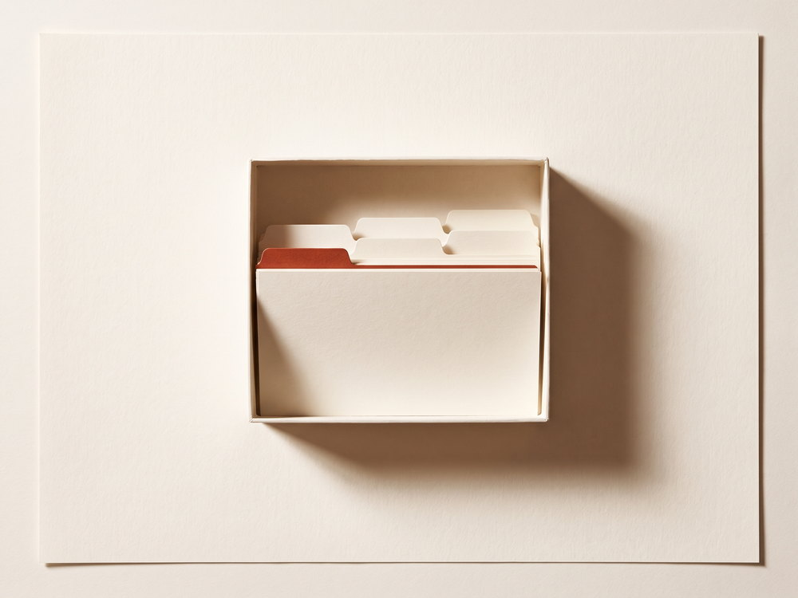
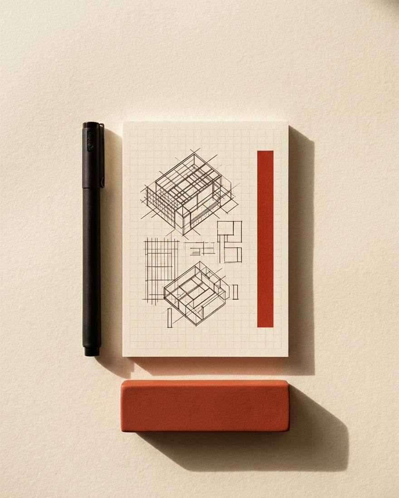

Landing page · Captação & Autoridade 2026
Landing page · Fisioterapia domiciliar
Visitar projeto ao vivo ↗
Quando um cliente pesquisa o seu nome, o site é a primeira prova da seriedade do seu trabalho. Desenvolvo páginas rápidas, sólidas e escritas à mão — projetadas para transmitir autoridade imediata.

Parâmetros técnicos assumidos em cada entrega — engenharia real, não promessas genéricas.
01 Serviços
Cada projeto é desenhado a partir da realidade comercial do cliente, unindo direção editorial, engenharia limpa, carregamento imediato e foco em conversão. Selecione uma frente para examinar o escopo.
Escopo de entrega
Indicado para
Escopo de entrega
Indicado para
Escopo de entrega
Indicado para

Escopo de entrega
Indicado para
02 Portfólio
Trabalhos publicados, em produção e auditados em desempenho e responsividade. Clique para navegar no projeto ao vivo.
| N.º | Cliente | Disciplina | Ano | Situação |
|---|---|---|---|---|
| 001 | Caroline Scarabelli | Landing page · Saúde & Fisioterapia | 2026 | Em produção |
| 002 | Reserva de agenda | Escopo sob medida | 2026 | Disponível |

Landing page · Captação & Autoridade 202603 Processo
Método claro e documentado. Você acompanha o avanço de cada fase e sabe exatamente o que vem a seguir.
Alinhamento sobre modelo de negócio, público, objetivos comerciais e requisitos técnicos. O projeto já nasce com escopo fechado.
Definição da estrutura de páginas, hierarquia de argumentos e direção visual antes de iniciar a codificação.
Desenvolvimento escrito à mão com rigor em velocidade, semântica, SEO técnico e acabamento fino em todas as telas.
Auditoria final de performance, apontamento de domínio, indexação no Google e entrega assistida para sua autonomia.
04 Sobre
Quem projeta a arquitetura, escreve cada linha de código e acompanha o seu projeto até a publicação é a mesma pessoa.

Arquitetura & Código Sob MedidaSou Carlos Guatelipe. Desenvolvo projetos web sob medida, escritos linha por linha, com foco em performance, clareza visual e resultado comercial.
Um site profissional não deve parecer produzido em série. Meu trabalho é construir uma presença digital que sustente o valor do seu serviço — combinando direção editorial precisa, carregamento imediato e uma estrutura pensada para converter visitantes em clientes.
Você trata diretamente comigo do início ao fim. Sem repasse entre setores, sem ruído de comunicação e sem prazos perdidos em intermediários: quem compreende a sua necessidade na primeira conversa é quem projeta e programa a solução.
Recuso construtores visuais pesados e temas pré-fabricados. Escrever o código à mão garante controle total sobre cada detalhe, pontuação máxima de velocidade no Google e uma base sólida que não fica engessada quando o seu negócio evolui.
Com formação em Análise e Desenvolvimento de Sistemas pela Estácio de Sá, uno a precisão da engenharia de software — lógica, banco de dados e arquitetura de sistemas — ao rigor tipográfico de cada interface.
Sem dependências inchadas ou plugins genéricos que comprometem a segurança e a velocidade.
Hierarquia de leitura e narrativa visual desenhadas para conduzir a decisão do cliente.
Semântica estrutural, dados estruturados Schema.org e métricas Core Web Vitals otimizadas.
Interfaces fluidas e homologadas em dispositivos reais, do smartphone ao monitor desktop.
Nenhum tema pronto. Cada projeto nasce de uma folha em branco — projetado para ter a exata medida do negócio que ele representa.
Carlos Guatelipe · Engenharia & Design Web
05 Compromissos
Não são promessas comerciais vagas: são as quatro diretrizes estabelecidas por escrito na proposta antes de iniciar qualquer desenvolvimento.
Você acompanha o avanço real do projeto e fala diretamente com quem executa, sem linguagem técnica desnecessária.
Link de prévia ativo desde a primeira semanaPrazos planejados de forma realista no início do projeto e cumpridos com previsibilidade até a publicação.
Escopo e datas formalizados por escritoRodadas de revisão dedicadas durante o desenvolvimento para garantir que cada detalhe fique exatamente como planejado.
Ajustes no escopo sem cobranças extrasOrientação completa para uso com autonomia e acompanhamento técnico dedicado após a entrada do site no ar.
30 dias de garantia e suporte incluídos06 Dúvidas
Caso precise avaliar um cenário específico, basta chamar no WhatsApp — respondo pessoalmente.
O valor é definido conforme a complexidade, o número de páginas e as funcionalidades necessárias. Como todo projeto é construído sob medida, envio uma proposta detalhada e sem compromisso após entender a sua demanda pelo WhatsApp ou e-mail.
Uma landing page costuma levar de 3 a 10 dias úteis; sites institucionais, de 2 a 4 semanas; lojas virtuais, de 3 a 6 semanas. O prazo exato é combinado no diagnóstico inicial, de acordo com o escopo.
Ajuda ter materiais iniciais em mãos, mas não é obrigatório. Auxilio na estruturação dos argumentos comerciais, na organização do conteúdo e na direção visual do projeto.
Sim. Todos os projetos são 100% responsivos, testados em celular, tablet e computador, e construídos dentro das métricas técnicas do Google (Core Web Vitals) com meta mínima de 95+ no PageSpeed.
Sim. Oriento na escolha e configuração do domínio e da infraestrutura de hospedagem, e realizo toda a publicação e configuração de segurança (HTTPS) para você começar a usar sem complicação.
O formato padrão é dividido em duas etapas: uma entrada para reserva de agenda e início do desenvolvimento, e o restante na aprovação final e entrega. Todas as condições ficam registradas por escrito junto com o escopo.
Você recebe orientação prática para gerenciar o site e conta com 30 dias de suporte técnico incluso para qualquer dúvida. Manutenção contínua ou novas funcionalidades podem ser contratadas sob demanda, sem mensalidades obrigatórias.
07 Orçamento
Inicie a conversa pelo WhatsApp ou e-mail. Analiso a sua demanda e retorno pessoalmente em até 48h úteis.
Conte brevemente o que você planeja construir. Você fala direto com quem vai projetar e programar.
Canais de atendimento
WhatsApp (31) 99919-1545 — canal prioritário E-mail guatelipe.dev@gmail.com LinkedIn Carlos GuatelipeO investimento depende diretamente do escopo do projeto. Me envie uma mensagem com o contexto da sua ideia — retorno com uma proposta clara, objetiva e sem compromisso.
Próximo passo
Retorno em até 48h úteis · Atendimento direto · Sem compromisso